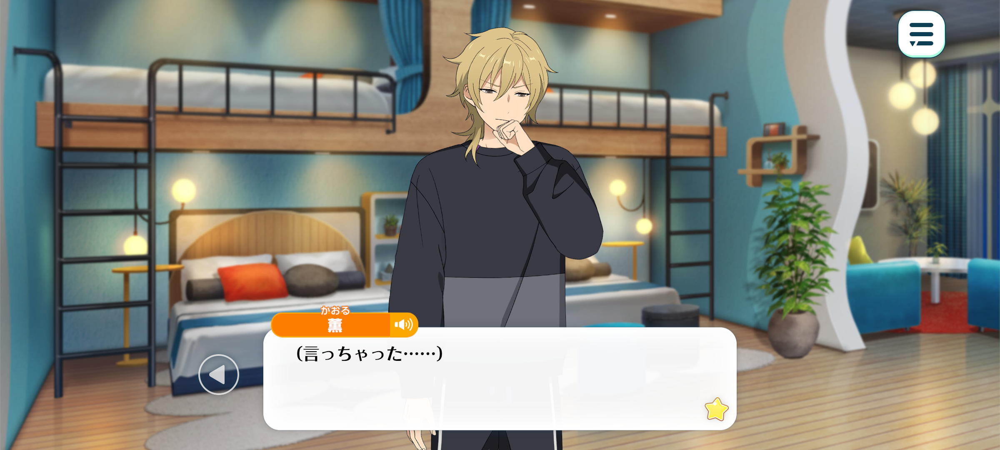
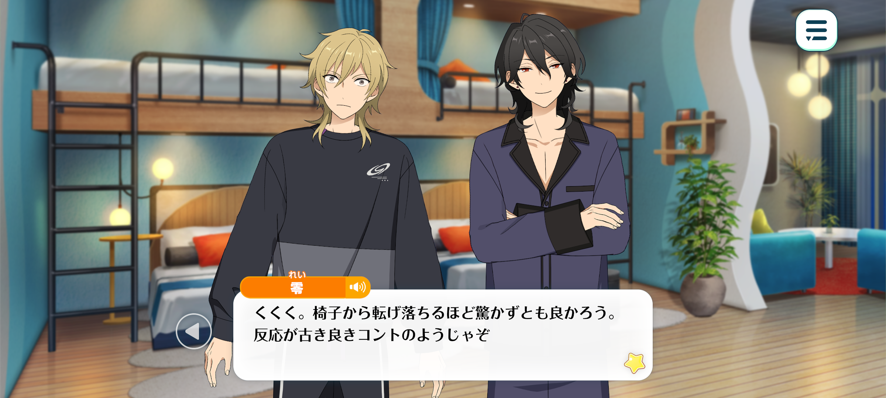
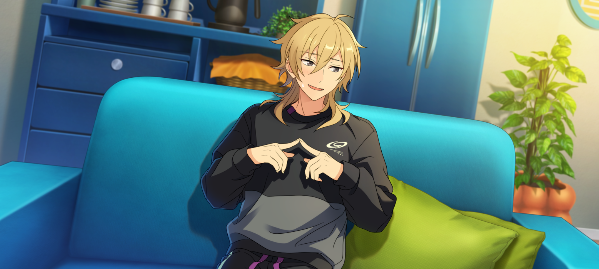
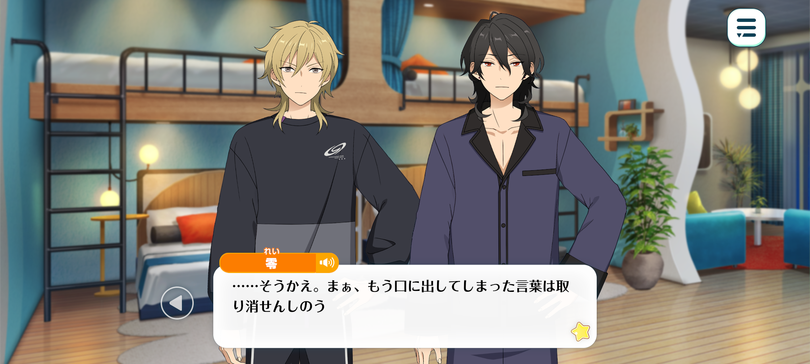
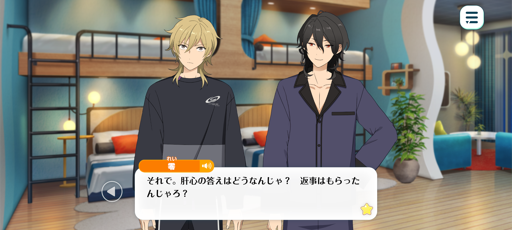

Confession Night
Idol Story


Season: Summer
Time: August of the second year since ES’ establishment. The night Kaoru confessed

Kaoru: (I actually went and did it...)
(I told Anzu-chan how I feel...)
(Uwaaah, what do I do?! No matter which way you spin it, that was confession. right? I said it way too sincerely to play it off as something else!)
(...My face is burning up. What kind of expression was I making back then? I was so caught up in the moment... I hope I didn't come on too strong and scare Anzu-chan off...?)

Rei: Kaoru-kun, are you quite alright?
Kaoru: Gah!?
Rei: Kukuku. There's no need to be so startled that you nearly fall out of your chair. That reaction was straight out of a good old-fashioned comedy sketch.
Kaoru: You just suddenly spoke up, Rei-kun. I didn't realise you were there...
Wait, huh? Where are Adonis-kun and Koga-kun? They were both in here just a little while ago, weren't they?
Rei: The two of them have gone to the communal bath. Which you should be aware of since you bid them farewell when they left. You’re away with the fairies today, hm?
Kaoru: Huh, I don’t recall that at all. I must've answered them without even realising it.
Rei: Hm... You’ve been flittering between bright red and pasty white for a while now. I was beginning to wonder if you were feeling unwell...
Kaoru-kun. Something has happened, hasn't it?
Kaoru: ...Whaatttt, nothing’s happened? Absolutely nothing at all~ ♪
Rei: You lie. You cannot fool me. It is clear as day that something is bothering you.
Now, what sort of thing could Kaoru-kun possibly be worrying about? It's not as though you're chasing after women anymore, so perhaps it's something work-related... Or could it be...?
Ah! Don't tell me you've confessed your feelings to the little miss?
Kaoru: Huh...!?
Rei: What's with that reaction? I was only fishing for a reaction, but it seems I've hit the mark.
Kaoru-kun, did you really...?
Kaoru: ...Yeah. I confessed.
Rei: ...
Kaoru: D-don’t give me that look! I wasn't planning on confessing at all, either, you know!?

Kaoru: But when I heard Kojika-san and Anzu were going on a date, I had to say something. Or more like, before I knew it, the words had already slipped out...
It was like— every normal thought went flying from my head. My position, my relationship with Anzu-chan... none of that mattered anymore. I got all choked up on my feelings and had to do anything and everything to stop Anzu from going on that date... ya know?
Rei: “Ya know?” What on earth were you thinking?
Kaoru: But you’re always the one asking me when I was going to tell her how I feel!
Rei: Well, I hardly thought you'd actually go through with it...
...No. I suppose I do bear some responsibility for egging you on in matters of the heart.
Kaoru: Ough... When you look at me like you're the one who should be apologising, I don’t know what to do with myself...
Rei: Kaoru-kun. I believe you understand this perfectly well already, but we are idols.
An idol is someone who is loved by countless fans, and who must return that love to each and every one of them equally.
If it became known that an idol was giving someone preferential treatment, many fans would surely feel betrayed.
And if that someone happened to be their producer... Well, that would be far more than just an ordinary scandal.
The little miss works herself to the bone to make us shine.
So, what do you think would happen if the very person responsible for promoting us, and the idols who sell their fans dreams, were to become romantically involved? I'm sure you can imagine the consequences, can't you?
Even if the two of you were to become a couple, should your relationship ever come to light...
You'd be subjected to one cruel accusation after another. "They're mixing business with pleasure!" "He's playing favourites!" Before long, both your reputations and the trust people have in you would be in tatters.
And the fallout wouldn't stop with the two of you. Koga, Adonis-kun... and even me. Every member of UNDEAD would be caught up in it.
Kaoru: ...
Rei: This particular situation could very well become something more than your typical celebrity love affair.
A romantic relationship between an idol and their producer is strictly forbidden. It is a line that must never be crossed. You are attempting to walk an exceedingly dangerous path, Kaoru-kun.
Kaoru: ...Yeah, you might be right.
I’m kinda starting to regret it. No matter how emotional I was feeling, I should have just kept my mouth shut.
As an idol, it'd be like betraying our fans. And I'd end up causing trouble for all of you... for you, Koga-kun and Adonis-kun. And for Anzu-chan, too.
Rei: Exactly. I'm glad you've come to understand just how dangerous your actions could be—
Kaoru: ...But.
I have no intention of taking back what I said.
Putting my feelings into words made me realise something.
I really do like Anzu-chan.
I just... I can't bring myself to look her in the eye and say, "Just kidding! I didn't mean any of it!"
I want— I want there to be something more between us.

Rei: ...
...Well, once words have been spoken, I suppose there's no taking them back.
If that is your intentions, then I have nothing more to say on the matter. You're free to follow your heart, Kaoru-kun.
Besides, I've been watching you all this time, after all.
As UNDEAD's leader, I must admit I have some reservations about this... But if the young lady feels the same way, I can't say I wouldn't want to support the two of you.
Kaoru: Wait, really?
Rei: So, what was her answer? Arguably the most important part in all of this.
Kaoru: Well uh... The thing is, as soon as I confessed, she got called over by some staff and uh...
We were both feeling pretty awkward, and she had to get back to work, so we ended up parting ways without really resolving anything.

Rei: ...What terribly unfortunate timing.
Kaoru: Tell me about it. All we can do is wait for her reply.
Rei: Good grief. I imagine you'll be on tenterhooks for quite some time, then.
Now listen, Kaoru-kun. For the time being, let's keep this between ourselves. Don't tell Koga or Adonis-kun. If the two of them found out, they might become overly conscious of the situation and end up acting peculiar around her.
Rei:Yeah, I get it. I don't want to cause any more trouble for everyone, either. I'll try to act just like I always do.
Rei: That's the spirit. I'll do what I can to keep this from causing any further trouble while we wait for the young lady to make up her mind.
Kaoru: I’m really sorry, Rei-kun.
Rei: Kukuku. A little late for that, wouldn't you say? ♪
Kaoru: Anzu-chan takes these things seriously, so I imagine she'll have a lot to think about. Her position and everything... I honestly have no idea what she'll decide...
But, I’ll wait for her.
That confession wasn’t a joke. I want to show her, slowly but surely, that I’m serious about this.